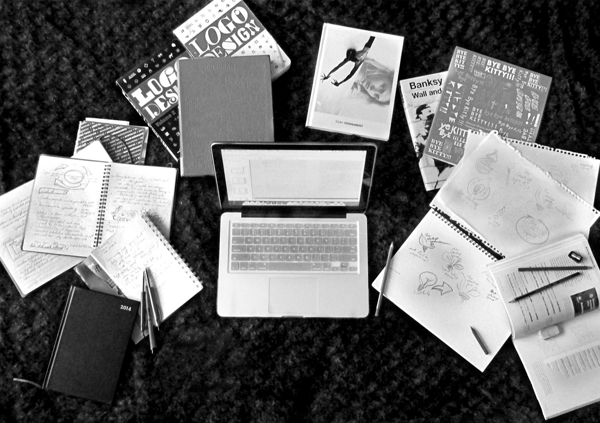

The Startup Space
A new startup business incubator, called The Startup Space, supported by the local city council, tertiary institutions and established incubators opened its doors in Dunedin in 2014. I had the privilege of designing their initial visual identity. The logo is based on a lighbulb and leaves to symbolise the growth of new ideas within the incubator.
I took this photo when I was in the middle of brainstorming logo ideas for The Startup Space. As well as documenting my process, it serves as a great reminder of the fact that design work doesn't exist in a vacuum — it is informed and shaped by the groundbreaking thinking done by other designers in the past.
I presented a number of ideas, ranging from cleancut geometric shapes, to freeflowing linework. The original concepts were split into 3 categories: Light and Growth, Birds and Liftoff, and Abstraction. Some of the more popular ideas were a robotic mascot, rocket on blastoff, ignited match and leafy lightbulb.
The Client really appreciated the organic shapes and ideas behind the lightbulb design. Original sketches for this concept included imagery of leaves, hands, filament, coils and more.

One of the final deliverables was a Style Guide booklet to assist with any other collateral.
Thanks for viewing!